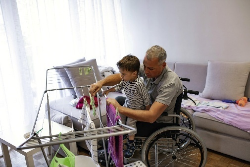

After reading this chapter, the learner should be able to do the following:
研读并掌握本章知识后，学习者应当能够全面达成以下临床核心技能与理论目标：
After reading this chapter, the learner should be able to do the following:
研读并掌握本章知识后，学习者应当能够全面达成以下临床核心技能与理论目标：
| 英文术语 / 国际音标 | 中文对照 / 出处 | 教材标准学术释义与临床界定 |
|---|---|---|
| compassion /kəmˈpæʃ.ən/ | 同理慈悲 / 怜悯关怀 166 |
Awareness of the misfortune and suffering of another person and the desire to take action to reduce or eliminate the source of their distress. p. 166
觉察他人的不幸与痛苦，并由衷产生采取行动以减轻或消除其痛苦根源的关切与意愿（第 166 页）。
|
| competence /ˈkɒm.pɪ.təns/ | 业务胜任力 / 专业资质能力 167 |
The ability to do a job well. p. 167
高效、安全且高质量完成本职照护工作的专业能力与综合素养（第 167 页）。
|
| dependence /dɪˈpen.dəns/ | 依赖 / 依附状态 168 |
The state of relying on others for support; being unable to manage without help. p. 168
在日常生活照料或决策中依赖他人支持、无外界协助便无法自主应对的状态（第 168 页）。
|
| family /ˈfæm.əl.i/ | 家庭 170 |
A biological, legal, or social network of people who provide support for one another. p. 170
由生物血缘、法律结合或社会关系联结而成，彼此提供物质、情感与生活支持的人际网络系统（第 170 页）。
|
| interdependence /ˌɪn.tə.dɪˈpen.dəns/ | 互赖 / 相互依存 168 |
The state of relying on one another. p. 168
个体之间在情感、生活或职责上彼此依托、相互支持与协同共存的状态（第 168 页）。
|
| primary caregiver /ˈpraɪ.mə.ri ˈkeəˌɡɪv.ər/ | 主要照料者 / 第一监护照护人 170 |
A person—usually a family member or close friend—who assumes the responsibilities of caring for a dependent person, usually in the person's home. p. 170
承担起照顾生活不能自理者日常全部或主要职责的人（通常为家庭成员或密友），多发生于服务对象的居家环境中（第 170 页）。
|
The section entitled Professional Communication (page 138) emphasized the need to communicate on a professional basis with both co-workers and supervisors. This chapter addresses the need to maintain a professional relationship with your clients while at the same time providing compassionate care (also known as person-centred care or client-centred care) (see Chapter 1).
在第 9 章“专业沟通”一节中（第 138 页），我们着重强调了与同事及主管在专业标准框架下开展高效沟通的重要性。而本章将深入探讨：支持工作者在为服务对象提供富于慈悲同理的关怀照护（即以人为本照护或以服务对象为中心照护，参见第 1 章）的同时，必须时刻恪守并维系专业工作关系的核心要义。
The client is usually part of a family, and your job as a support worker, in many circumstances, affects not only the client but also the client's family. It is therefore important to understand your role in the context of the family. You may get to know some members very well; however, your relationships with your clients and the family must remain professional at all times.
服务对象通常深植于其家庭系统之中。在众多执业场景下，支持工作者的日常照护不仅直接作用于服务对象本人，亦会深刻牵动其整个家庭。因此，在家庭系统大背景下清晰理解自身的角色定位至关重要。你可能会与某些家庭成员非常熟络；然而，你与服务对象及其家属之间的交往必须在任何时刻都坚定地保持在专业支持关系的轨道之内。
Chapter 1 defined compassionate (or person-centred or client-centred) care as care that demonstrates concern for the dignity, independence, individualized care, preferences, privacy, and safety (DIPPS) of clients and their families at all times.
第 1 章将关怀照护（以人为本或以服务对象为中心照护）界定为：在任何时候、任何情境下，均对服务对象及其家庭的人格尊严（Dignity）、自主独立（Independence）、个性化照护（Individualized Care）、个人偏好（Preferences）、隐私保密（Privacy）与人身安全（Safety）——即 DIPPS 核心准则——给予全方位的尊重、捍卫与贯彻。
It is also important to remember that your relationship with your clients and their families is a professional supportive relationship that is established to benefit the client. It is different from a friendship, which is a personal social relationship that benefits both persons involved.
同样必须牢记的是，你与服务对象及其家属之间建立的关系，是一项专属以增进服务对象健康福祉为唯一宗旨的专业支持性工作关系（Professional Supportive Relationship）。它与私人社交友谊（Friendship）存在本质区别——友谊是一种旨在使交往双方共同获得情感愉悦与社交满足的私人联结。
A relationship is the connection between two or more people, and it is shaped by the roles, feelings, and interactions of those involved. Relationships can be either personal or professional. Mixing a professional relationship with a personal relationship is unethical.
人际关系是两人或多人之间的心理与行为纽带，由参与各方的角色定位、情感体验与互动模式共同塑造。人际关系分为个人关系与专业关系两大范畴。在临床实务中将专业工作关系与私人社交关系相混淆，属于严重违反职业道德的行为。
As a support worker, you must remember that you are a professional and must maintain professional boundaries. Professional boundaries are appropriate limitations on behaviour, meant to protect the vulnerable client from the caregiver who has access to private knowledge about him or her.
作为一名支持工作者，你必须时刻清醒认识到自己属于专业医护辅助人员，必须严守职业界限。职业界限（Professional Boundaries）是指对从业者职业行为设立的正当边界与防护门槛，其根本法理宗旨在于：保护处于生理、心理或身心脆弱状态的服务对象，免受掌握其大量个人私密信息与日常依赖的照护者任何形式的不当干预或利益剥削。
In any relationship in which one person is dependent on the other, the balance of power may not be equal. Being aware and trying to make allowances for potential imbalances of power in your relationships with your clients is an important aspect of maintaining a professional boundary. An important part of the five principles of support work (DIPPS: Dignity, Independence, Individualized Care, Preferences, Privacy, and Safety) is understanding that you do not have a right to force a client to do anything they do not wish to do.
在任何一方对另一方产生生活依赖的人际关系中，双方之间的权力平衡往往是不对称的。清醒觉察并在日常相处中有意识地调节与补偿这种潜在的权力失衡，是坚守职业界限的核心维度。支持工作 DIPPS 准则的关键要义之一，便是深刻领悟：作为照护者，你没有任何法律或伦理权利强迫服务对象从事任何其不愿做的事情。
Another is maintaining confidentiality (see Chapter 1). As a support worker, you will be required to care for clients when they are at their most vulnerable (e.g., washing them after toileting). You may learn about their personal health history or financial situation.
严守职业界限的另一根基石在于严守保密义务（参见第 1 章）。支持工作者常常需要在服务对象最脆弱无助的时刻提供照护（例如如厕后的会阴清洁与擦洗）。在此过程中，你可能会获悉其极其敏感的个人既往病史、家庭纠纷乃至私密财务状况。
Some clients may wish to discuss private matters with you (see the Supporting Mrs. Chase: Maintaining Professional Boundaries box), and they must feel confident that their information will remain private. However, your clients or their family members may consider you to be a friend because of the intimate nature of the information they have disclosed to you, but you must not share your intimate information with them. Always remember to relate to a client as a professional helper, not as a friend.
某些服务对象可能会主动向你倾诉极其私密的往事（参见“支持克里斯蒂娜·蔡斯夫人：守住职业界限”专栏），他们必须确信自己的隐私能够得到绝对保密。然而，服务对象或其家属往往会因为向你吐露了隐秘心声而误将你视作私人好友；但作为照料者，你绝不能向他们反向倾诉你个人的私人隐秘生活。
Friends share compassion, support, common experiences, problems, and advice and choose to spend time together. As a support worker, you are assigned the amount of time you will be providing care, although you may enjoy that time spent with your client. TABLE 11.1 compares professional supportive relationships with friendships.
请时刻谨记：你与服务对象的交往基石是“专业协助者”，绝非“私人密友”。朋友之间会互诉衷肠、分享共同遭遇、倾诉烦恼并自愿选择共度私人时光；而支持工作者则是根据机构排班在法定工时内提供照护，即使你由衷享受与服务对象相处的时光。表 11.1 系统对比了专业支持性工作关系与私人社交友谊的核心差异。
Although your professional relationship with a client and family is not friendship, you should still show that you care about them. Treat them with compassion and consideration, and recognize that each client is a unique individual. When working with clients and their families, demonstrate the following:
尽管你与服务对象及其家庭的专业关系并非私人友谊，但你依然应当由衷展现对他们的人文关怀。以同理慈悲与体贴关照对待他们，深刻认识到每一位服务对象都是独一无二的独立个体。在与服务对象及其家属互动时，必须恪守并践行以下核心专业素养：
| 比较维度 (Dimension) | 专业支持性照护关系 (Professional) | 私人社交友谊 (Friendships) |
|---|---|---|
| Governing Standards 规范准则 |
Behaviour regulated by a code of ethics and professional standards; framed by agency policy.
行为受到职业道德准则与专业行业标准的严格规管；必须完全遵循雇主机构的政策与操作程序。
|
Behaviour guided by personal values and beliefs.
行为主要受个人价值观、人生信念及私人情感偏好所引导。
|
| Remuneration 报酬支付 |
Support worker paid to provide care to client.
支持工作者领取机构发放的法定劳动薪酬为服务对象提供专业照护，严禁收受私人金钱或贵重财物。
|
No payment for being in the relationship.
纯粹基于私人自愿交往，不存在任何金钱雇佣或服务对价报酬。
|
| Orientation / Focus 交往导向与核心目标 |
Support worker provides care within a defined role and follows an established care plan in meeting the client's needs.
支持工作者在明确的角色边界内提供照护，严格遵循既定的照护计划以满足服务对象的全人健康需求。
|
Pleasure- or interest-directed.
以双方共同的愉悦感、兴趣爱好、社交娱乐或私人情感满足为导向。
|
| Balance of Power 权力平衡与影响力 |
Support worker has more power due to authority, knowledge, influence, and access to privileged information about client.
支持工作者因拥有专业资质、权威影响、技术手段以及知悉服务对象极为隐私的健康家庭档案，客观上掌握更大权力。
|
Relatively equal power in relationship.
朋友双方在关系中享有相对平等的权力和地位，不存在法定的从属或照料依赖关系。
|
| Responsibility for Boundaries 维系界限的责任主体 |
Support worker (not client) responsible for establishing and maintaining professional relationship.
由支持工作者（而非服务对象）单方面承担确立并维系职业界限的法定伦理全部责任。
|
Equal responsibility for establishing and maintaining relationship.
双方共同分担维系友谊、协商边界与解决交往分歧的双向平等责任。
|
| Time Commitment 时间投入与接触限制 |
Support worker gives care within outlined hours of work.
支持工作者仅在工作排班安排的规定工时与任务分配范围内提供照护，下班后严禁私人私下频繁接触。
|
Personal choice regarding how much time is spent in the relationship.
完全取决于个人的自主意愿与空闲安排，可自由决定投入多少私人时间进行交往。
|
Independence, dependence, and interdependence are fundamental concepts in professional supportive relationships.
独立（Independence）、依赖（Dependence）与互赖（Interdependence）是构建专业支持性照护关系的基石理念，贯穿于所有临床评估与日常协助之中。
The above terms must be considered in relation to one another. No one is completely independent, and no one is completely dependent (with the exception of infants, very young children, and unconscious clients). Most people's relationships have elements of all three traits.
上述三项概念必须置于动态相互关联的视角下综合审视。现实中没有任何人是绝对彻底独立的，也没有任何人是绝对完全依赖的（除婴儿、极幼龄幼童以及深昏迷患者等极端情形外）。在大多数健康人的生活与人际交往中，往往同时交织着这三种特质。
For example, Julie considers herself to be independent. She feels she is in control of her busy and rewarding life as a support worker, wife, and mother of two young boys. She works full time and drives her children to day care.
以朱莉（Julie）的生活为例：朱莉自视为一个非常独立的人。作为一名支持工作者、妻子兼两个小男孩的母亲，她对自己充实而富有成就感的生活感到从容自得。她从事全职工作，每天驾车送孩子们去托儿所。
Julie is independent because she is in control of her career and her home life. However, she also depends on others. Without reliable child care, she cannot work full time. Julie and her husband have an interdependent relationship—they rely on each other for emotional support and companionship and also for help with child-rearing, housework, grocery shopping, and cooking.
朱莉之所以独立，是因为她完全掌控着自己的职业生涯与家庭生活。然而，她同样在很大程度上依赖他人——如果没有稳定可靠的日托育儿机构，她根本无法全职投入工作。同时，朱莉与丈夫之间维系着高度健康的互赖关系：他们在情感与心灵伴侣层面彼此依托，在抚养子女、家务清洁、采购食材与日常烹饪等现实责任上紧密协作、互相分担。
An important goal of most clients' care is for the client to achieve or maintain as much independence as possible (FIGURE 11.1). Everyone makes choices about when to do things for themselves and when to rely on others.
绝大多数照护计划的崇高临床目标，都是协助服务对象尽可能恢复或维持最大程度的自主独立生活能力（图 11.1）。每个人都在不断做出抉择：何时亲力亲为料理事务，何时寻求并接受外界援助。
These choices coincide with setting goals and priorities. As a support worker, you must respect your client's choices to do some things independently and to accept help with other things, even though you may not fully understand the reasons for these choices.
这些选择与个体确立的人生目标及生活优先次序高度契合。作为支持工作者，你必须由衷尊重服务对象关于“哪些事情坚持自主完成、哪些操作接受协助”的决定，即使你一时无法完全理解其选择背后的深层原因。
For example, Elena is hired to help Ms. Godin, who has severe arthritis. Elena's role is to assist Ms. Godin with morning personal care so that she can get ready for work. Elena knows that Ms. Godin is capable of dressing, showering, and preparing breakfast without help. However, each task takes a long time for Ms. Godin.
例如，埃莱娜（Elena）受聘照顾罹患严重关节炎的高丁女士（Ms. Godin）。埃莱娜的工作是协助高丁女士完成晨间个人护理，以便她能顺利出门上班。埃莱娜非常清楚：高丁女士在生理上完全有能力独自穿衣、淋浴及准备早餐。然而，自行完成这些日常琐事需要耗费高丁女士极长的时间与巨大的体力。
She chooses to put her energies into her work, not into getting ready for work. Elena respectfully accepts Ms. Godin's choices. Clients, like everyone else, make choices according to their wishes and capabilities and must never feel that you are judging their decisions.
高丁女士理性地选择将宝贵的精力储备投入到白天的正式工作之中，而非在清晨的穿衣洗漱中过早耗尽。埃莱娜庄重而接纳地遵从了高丁女士的自主选择。服务对象与常人无异，都是依据自身的意愿与身体机能做出权衡决断，绝不能让他们感到自己的生活决策正在遭受照料者的挑剔评判。
What makes you feel good about yourself? Working hard at your job or school? Playing a sport?
究竟是什么让你对自己感到自信与满意？是在职场或学业中全力以赴？是驰骋于运动赛场？
Caring for your family? How would you feel if you could no longer do these things? As children, we start to develop self-esteem, thinking well of ourselves, as we attain control over our bodies and our environments. Self-esteem generally strengthens when people feel that their lives have meaning for themselves and for others.
还是悉心照料挚爱的家人？如果有一天你再也无法从事这些活动，内心会承受怎样的冲击？从童年时代起，随着我们逐渐获得对自己身体动作与周围生存环境的自主掌控权，我们便开始萌发自尊（Self-esteem）——即对自我抱有积极正面的评价。当人们真切感受到自己的生命对自身及他人充满意义时，自尊感通常会得到极大巩固。
Self-esteem is also closely associated with independence (see Chapter 1) and can suffer when independence is limited or lost and when roles and identities change, as they do when a person is no longer in control of their life (see Chapter 6). As a support worker, you need to be sensitive to how clients feel when they lose their independence because of illness or disability.
自尊与个体的独立性紧密相连（参见第 1 章）。当独立能力受到严重限制甚至丧失，当原有的社会角色与身份认同因身体失控而发生剧变时（参见第 6 章），自尊往往会遭受沉重打击。作为支持工作者，你必须对服务对象因罹患严重疾病或残障而丧失生活自理能力时的痛苦与挫败感保持高度敏锐。
Clients who have lost their independence need to find ways to rebuild their self-esteem. Some clients are not able to do this and, in turn, become frustrated or depressed, while others are able to find a new purpose in life. For example, at age 17, Ricardo and two friends had been drinking at a party.
丧失了独立生活能力的服务对象需要探索重建自尊的新路径。某些人难以独自走出阴霾，从而深陷极度的沮丧或抑郁之中；而另一些人则能够绝处逢生，寻找到全新的生命意义。例如，17 岁那年，里卡多（Ricardo）与两位好友在派对上饮酒。
On the way home, the driver lost control of the car and hit a telephone pole. Ricardo's two friends died at the scene, and Ricardo ended up with quadriplegia and was in the hospital for 7 months. After his accident, he lost physical abilities that he had taken for granted, such as toileting and transferring.
在乘车回家途中，驾驶员失控撞上了路边的电线杆。里卡多的两位好友当场丧生，而里卡多则因严重脊髓损伤导致高位截瘫（四肢瘫痪，Quadriplegia），在医院苦苦救治了整整 7 个月。车祸彻底剥夺了他曾认为理所当然的身体机能（如自主如厕与自主移动体位）。
He became so depressed that he wished he had died with his friends in the accident. Then his high school principal asked him to speak to the students about the dangers of drinking and driving. Ricardo agreed, and since then, he has spoken to students at every school in his community, which has given him a purpose in life.
他陷入了极其严重的抑郁，甚至绝望地希望自己当初也能随好友一同死于那场车祸。转机发生在他所在高中的校长诚挚邀请他回校向年轻学子们宣讲酒驾的致命危害。里卡多欣然应允；自那以后，他走遍了社区内的每一所学校发表演说，这赋予了他焕然一新的人生价值与崇高使命。
You can reinforce a client's self-esteem by offering encouragement and praising the client's successes. If the client is not experiencing success yet, you can recognize the efforts made. You might say, 'I can see how hard you are trying.' Give the client honest, constructive feedback in a gentle, supportive fashion.
你可以通过适时给予真诚鼓励并赞扬服务对象取得的点滴进展，来切实强化其自尊心。若服务对象暂时还未取得明显突破，你同样应当认可其所付出的艰辛努力。你可以真挚地说：“我真切看到了您正在多么努力地尝试！”以温柔、支持与赋能的方式，向服务对象提供客观诚恳且具建设性的临床反馈。
Being aware of the balance of power in your relationships with your clients is important so that you avoid any controlling behaviour; it is easy to unconsciously become controlling. In some situations, controlling behaviour may lead to the stronger person abusing the dependent person (see Chapter 12).
在与服务对象的专业照护互动中，时刻对双方之间的权力平衡保持警觉至关重要，唯有如此方能杜绝任何操控与强迫行为；在日常繁杂的操作中，照料者极易在不知不觉中滑入控制者的角色。在特定执业情境下，控制性行为极易演变为强势一方对依赖弱势一方的侵权甚至虐待（参见第 12 章）。
For example, Lynn's client, Mrs. Kerr, insists on wearing a blouse with 10 tiny buttons and buttoning them herself. Mrs. Kerr takes 3 minutes to do the first button. Lynn does not have 30 minutes to help Mrs. Kerr dress.
例如，琳恩（Lynn）照料的长者科尔夫人（Mrs. Kerr）坚持要穿一件带有 10 粒细小纽扣的衬衫并坚持自己系扣。科尔夫人光系第一粒纽扣就耗费了整整 3 分钟。琳恩的排班时间非常紧张，根本没有 30 分钟耗在穿衣上。
She suggests to Mrs. Kerr that she wear something else, but Mrs. Kerr refuses. She is expecting visitors and wants to look good. Lynn undoes the button, removes the blouse, and hands Mrs. Kerr another garment, saying, 'You will look just as nice in this sweater.'
她劝科尔夫人换一件衣服，但科尔夫人断然拒绝——因为她今天有贵客来访，渴望展现自己端庄体面的风采。琳恩直接强行解开了那粒扣子，脱下衬衫，将另一件套头毛衣塞到科尔夫人手中，并以不容置疑的口吻说：“穿这件毛衣您看起来一样精神漂亮！”
Instead of imposing your will on your clients, involve them in solving problems that may arise. For example, Lynn could have explained to Mrs. Kerr that her time was limited, and together they could have thought of a solution.
作为专业的支持工作者，绝不能将个人意志强加给服务对象，而应当邀请并赋能他们共同参与解决所面临的现实困境。
Lynn might have suggested that they take turns doing the buttons. Or she might have suggested that she carry on with doing other tasks (like tidying the room) while Mrs. Kerr dressed herself. Or Lynn could have set some guidelines at the very beginning of the day's schedule: 'Mrs. Kerr, I have 20 minutes today, and this is what we have to accomplish in that time frame.'
例如琳恩本可以如实向科尔夫人解释自己的上门时间确实非常有限，并邀请长者共同协商可行的折中方案：琳恩可以建议两人轮流系扣；或者建议在科尔夫人自主扣纽扣的同时，琳恩同步开展其他房间整理工作；又或者在排班伊始便清晰沟通时间预期：“科尔夫人，我们今天共有 20 分钟时间，我们需要在这个时间段内共同完成这几项核心事务。”这种平等协商维护了服务对象的尊严与权力对等。
Close personal and family relationships are central to the lives of most people and involve some forms of dependency. Spouses depend on one another for emotional support, companionship, and financial support.
紧密亲密的个人与家庭关系构成了绝大多数人生命的核心支柱，并天然伴随着各种形式的相互依存。
Children depend on their parents to meet their physical, emotional, and financial needs. Older parents may depend on their adult children to help them with physical and emotional needs.
夫妻之间在情感依托、生活陪伴与经济保障上彼此依赖；子女依赖父母满足其生理发育、情感呵护与经济维系；而年迈的父母则可能逐渐依赖成年子女来协助满足其日益衰退的身体机能照料与心理慰藉需求。
As a support worker, you will be working with different types of families. The family is a biological, legal, or social network of people who provide support for one another (see Chapter 7). Families can take many forms and may include people related by blood or marriage or unrelated people who have formed a close personal relationship. Examples of families include the following:
作为支持工作者，你将接触到各种各样不同结构与背景的家庭形态。家庭是由生物血缘、法律连结或社会关系所构成的、彼此提供物质与情感支持的人际网络系统（参见第 7 章）。现代家庭呈现出极其多元的组织形式，既包括通过血缘或婚姻缔结的亲属，也涵盖因长期共同生活而形成深厚情感羁绊的非亲属群体。当代常见家庭形态包括但不限于：

You may have different ideas about what a family is. However, as a support worker, you must always respect your client's definition of family. Your client will determine who they regard as family. Do not impose your values on the person.
你个人或许对“家庭”有着自己的传统观念或文化理解。然而，作为专业支持工作者，你必须无条件尊重服务对象对其自身家庭构成的自主定义。唯有服务对象本人有权决定谁是他们生命中的“家人”。绝不能将你个人的文化偏好或传统道德观念强加给长者与家庭。
In addition to different types of families, you will work with families with different dynamics. There will be functional families that support your client and work as a team, and there will be troubled families who are in conflict over many issues, some of which you may not be aware of.
除了家庭结构的多样性，你还将面对极其不同的家庭动力学机制（Family Dynamics）。有的属于功能健全、紧密协作支持长者的良性家庭；有的则属于深陷多年矛盾、在众多利益与情感问题上冲突不断的失调家庭，其中许多历史积怨你可能并不知情。
Every family has different dynamics that are influenced by culture, language, or role changes. In patriarchal families, the major decision maker in the home is the elder male, whereas in matriarchal families, it is the oldest female in the home who makes the family's decisions. It can be very stressful on these families when the head of the household becomes ill.
每个家庭的互动模式都深受文化信仰、母语背景及家庭角色变迁的深刻塑造。在父权制家庭（Patriarchal Families）中，家中的最高决策权往往掌握在年长的男性手中；而在母权制家庭（Matriarchal Families）中，则由最年长的女性掌管家庭的一切重大决断。
The care plan that the health care team recommends for the client—and that you, as the support worker, need to follow—adds to the family's stress since having the health team in the client's house interferes with the family's privacy. Be sensitive and aware that the family dynamics may go through changes when illness occurs. Communicate any concerns to your supervisor.
当这些掌舵的户主突发严重疾病时，整个家庭系统会承受巨大的震荡与无所适从的危机。医疗团队为主管制定的照护计划——以及作为一线执行者的你需要严格落实的照料任务——客观上会加剧家属的应激感，因为医护人员频繁进出私宅不可避免地侵犯了家庭的私密空间。从业者必须具备敏锐的同理心，时刻觉察疾病降临时家庭动力学的微妙剧变，并将观察到的重大隐患及时汇报给临床主管。
There are many situations in which you help families in your role as a support worker. You may care for new birth parents and their babies. You may care for toddlers or older children when their parent is ill or unavailable.
在许多实务情境中，支持工作者都直接肩负着辅助家庭系统的重任。你可能会协助产妇护理新生儿；在父母重病或缺位时协助照料幼儿或学龄儿童；你更经常需要为主要照料者（Primary Caregiver）——即通常在服务对象家中承担起全部或主要照护责任的家属或挚友——提供有力的实操协助或迫切所需的喘息关怀服务（Respite Care）（参见“聚焦居家照护：辅助主要照料者”专栏）。
You may assist or provide needed respite for a primary caregiver, the person (usually a family member or a close friend) who assumes the responsibilities of caring for a person with an illness or a disability in the person's home (see the Focus on Home Care: Assisting the Primary Caregiver box). Whatever the situation, when working with a family, you indirectly support their relationships. By providing a family with basic care and support services, you enable family members to invest more time and energy in their relationships.
无论身处何种场景，当你为家庭服务时，你都在间接支撑着其内部的人际纽带。通过承担起琐碎繁重的日常基础生活照护，你为家庭成员赢得了宝贵的时间与精力，使他们能够将更多心力重新倾注于维系亲情与滋养彼此关系之中。
Chapter 6 discussed how roles change when illness or disability strikes a family. Very often, one family member becomes the primary caregiver for another family member.
第 6 章曾系统阐明当严重疾病或残障突袭家庭时所引发的角色巨变。通常，某一位家庭成员不得不挑起成为另一位成员主要照料者的重担。
They form a different relationship, with new patterns of dependency, and this shift is rarely easy. The person with the illness or disability may feel angry about having to depend on the caregiver. The caregiver may feel burdened by the new responsibility in addition to other family and work demands.
原有的亲情模式彻底转变，演变成一种全新的依赖格局，这种身份骤变往往伴随着极大的痛苦。罹患疾病的长者可能会因为不得不处处依赖至亲而产生强烈的屈辱与愤怒；而作为主要照料者的亲属，在承受原本繁重的工作与家务之余，更背负着沉重的照护枷锁与身心耗竭。
When illness or disability occurs, the stress on all family members may be great, and members may have to cope with conflict. Conflicts may take the form of expressions of irritation, anger, bickering, or arguments.
当严重的疾病或终身残障突袭家庭时，所有家庭成员所承受的心理与生理重压是难以估量的，大家往往被迫直接面对尖锐的内部人际冲突。
Conflict may sometimes be hidden. Adult children may care for aging parents with whom they have unresolved conflicts.
家庭矛盾可能表现为直接的烦躁发泄、暴怒争吵、无休止的口角或激烈的言语对抗。有时，这些矛盾是高度隐蔽的——例如成年子女不得不长期照料与其有着深层未化解童年创伤的年迈父母；数年断绝往来的手足兄弟因为父母病危而被迫在病榻前狭路相逢。
Siblings who have not spoken in years may be forced to see one another during a parent's illness. Sometimes, the health care team can help families resolve their difficulties in such situations. Members of palliative care teams are specially trained to help people resolve emotional problems that are causing them distress (see Chapters 8 and 9 for managing stress and conflict).
在此类严峻时刻，医疗照护团队往往能够提供关键支持。特别是安宁缓和医疗团队（Palliative Care Team）的专业成员经过高阶专职培训，能够深度协助家庭疏导并化解引发剧烈身心痛苦的情感症结（参见第 8、9 章关于压力与冲突管理的专业应对）。
When working with a family, try to be aware of family relationships and any conflicts, communication difficulties, and stressful situations (FIGURE 11.2). It is not part of your role to help families deal with their interpersonal problems, but there are some things you can do in a stressful situation.
在为家庭提供照护时，请时刻保持敏锐，细致觉察家庭内部的人际互动、潜在冲突、沟通障碍以及高应激态势（图 11.2）。帮助家庭调解或解决其内部人际矛盾绝不是支持工作者的法定角色职责；然而，在面对剑拔弩张的紧张场面时，你可以采取恰当的降温策略。
You could encourage communication without taking sides, or you could defuse (calm) a tense situation—for example, when angry words have been exchanged between the client and a family member, you may suggest to the family member to go out for a coffee or take a short walk while you attend to the client. Your supervisor expects you to observe and report on family interactions (see the Case Study: Family Conflict box) and also be alert for signs of abuse (see Chapter 12).
你可以积极鼓励各方平静沟通而绝不偏袒任何一方；你更可以巧妙化解与缓和一触即发的紧张对峙——例如当服务对象与家属刚刚爆发了激烈的言语冲突时，你可以体贴地建议该家属暂时下楼喝杯咖啡或散散步稍作冷静，由你留在房间内专心为服务对象提供日常护理。你的临床主管对你的最高要求是：客观观察并详实汇报家庭成员间的真实互动动态（参见“临床个案实录：家庭冲突”专栏），并对任何潜在的疏忽或虐待迹象保持最高级别的警惕（参见第 12 章）。
Answers to these questions are at the bottom of the page in the printed textbook. In this fluid web edition, all 9 authentic questions have been relocated to the dedicated, interactive Self-Test Quiz Bank for Chapter 11.
在原版纸质教材中，试题的参考答案附于该页底部。在本次全新升级的流式数字网络版中，本章全部 9 道标准执业自测题已被独立收录于专属的“第 11 章自测习题库”模块中，提供即时互动答题校验与权威双语临床解析。